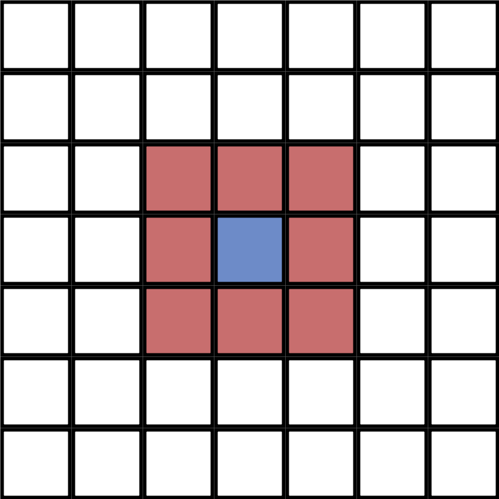

Conway's Game of Life
Table of Contents
- 1. Introduction
- 2. The grid abstraction
- 3. Life rules
- 4. React JS Components
- 5. The HTML document
1 Introduction
This document describes my first attempt at implementing the classic zero-player game Conway's Game of Life in Javascript using the React JS library.
The Game of Life (GOL for short) consists of a two-dimensional grid of cells representing living things. Each cell can be either alive or dead and each turn some cells die, some born and others stay the same. The game requires an initial condition as input, that is: which cells are alive and which are dead; from there, a particular set of rules are applied iteratively to each cell and the configuration evolves over time, rendering beautiful apparent randomness and chaos.
The GOL rules for each cell involve counting the number of living cells in the neighborhood of a particular cell. In the following picture the neighborhood of the blue cell consists of the cells painted in red.

The transitions for every cell in the grid from one step of the game to the next are as follows:
- Any live cell with fewer than two live neighbours dies;
- Any live cell with two or three live neighbours lives on to the next generation;
- Any live cell with more than three live neighbours dies;
- Any dead cell with exactly three live neighbours becomes a live cell.
2 The grid abstraction
The two-dimensional grid in GOL is infinite by definition, but this implementation in particular will be a finite grid with connected frontiers. The implementation provides means to:
- Create a new grid with values assigned by location.
- Obtain the number of rows and columns of a grid.
- Obtain the value of a particular location of a grid.
- Assign a value to a particular location of a grid.
2.1 Creating a grid
The function make handles the creation of a new grid. Grids are implemented as arrays of rows, where each row is also an array of values.
The arguments of make are the number of rows and columns, and a function that takes two arguments (the position in the grid) and returns a value.
<src/grid.js>
function make(nrows, ncols, makeValue) { let g = Array(nrows); for (let i = 0; i < nrows; i++) { g[i] = Array(ncols); for (let j = 0; j < ncols; j++) { g[i][j] = makeValue(i, j); } } return g; }
2.2 Obtaining the rows and columns of a row
The countRows and countCols functions compute the number of rows and columns respectively for a given grid.
Given that the grid is represented as an Array of rows we can obtain it's length with the length property. Easy peasy lemon squeezy:
<src/grid.js>
function countRows(grid) { return grid.length; }
The number of columns is almost as easy, we just need to obtain the length of any of it's rows:
<src/grid.js>
function countCols(grid) { return grid[0].length; }
2.3 Get a particular value of a grid
Locations in a grid are determined by a row and column index, however given that we want to have a grid with connected frontiers we must use some modular arithmetic to handle locations outside the limits of the array.
Javascript's % operator computes the remainder, to compute \(\modulo(a,b)\) we need to take into account the following:
- \(a \geq 0 \implies \modulo(a,b) = a \% b\)
- \(a < 0 \implies a \% b = r \in (-b,0],\ (b+r)\%b = \modulo(a,b) = (b + (a \% b)) \% b\)
- \(a \geq 0 \implies (b + (a \% b)) \% b = (b + \modulo(a,b)) \% b = \modulo(a,b)\)
The modulo implementation is defined as:
<src/grid.js>
function modulo(a, b) { return ((a % b) + b) % b; }
Now we can simply define the function ref in terms of array indexing and modulo to obtain the value of a given location in a grid.
<src/grid.js>
function ref(grid, i, j) { return grid[modulo(i, countRows(grid))][modulo(j, countCols(grid))]; }
2.4 Changing a grid value
Simmilar to the ref function, we implement set to accept an aditional value argument to be placed in the specified location of a grid.
<src/grid.js>
function set(grid, i, j, value) { grid[modulo(i, countRows(grid))][modulo(j, countCols(grid))] = value; }
2.5 Interface
The file src/grid.js contains the code from this section, the object grid is the interface used in other files:
<src/grid.js>
var grid = {}; grid.make = make; grid.countRows = countRows; grid.countCols = countCols; grid.ref = ref; grid.set = set;
3 Life rules
Now we implement a layer of abstraction on top of grids that implements the GOL rules. This task concearns the following problems:
- How to encode GOL concepts with grids.
- How to handle GOL transitions.
The following sections tackle these points.
3.1 Mapping life to grids
A GOL grid is going to be a grid whose locations hold cells, represented by the values alive or dead. The rules of GOL take into consideration the number of live neighbors of a particular cell, therefore it's convenient to represent the cell's values as 1 and 0, so we can add the alive neighbors more easily.
<src/life.js>
const alive = 1; const dead = 0;
To provide a constructor, getter and setter for GOL grids, we leverage the grid.make, grid.ref and grid.set implementations. The only thing we must be careful is to use the cell values alive or dead when using the following functions:
<src/life.js>
function make(nrows, ncols, makeCell) { return grid.make(nrows, ncols, makeCell); } var countRows = grid.countRows; var countCols = grid.countCols; function ref(life, i, j) { return grid.ref(life, i, j); } function set(life, i, j, cell) { grid.set(life, i, j, cell); }
One aspect of GOL grids is that each cell has an associated degree of some sort (the number of alive neighbors). The function neighbors computes this value for a given cell location:
<src/life.js>
function neighbors(life, i, j) { return ref(life, i-1, j-1) + ref(life, i , j-1) + ref(life, i+1, j-1) + ref(life, i-1, j ) + 0 + ref(life, i+1, j ) + ref(life, i-1, j+1) + ref(life, i , j+1) + ref(life, i+1, j+1); }
3.2 Evolving life
Now we proceed to implement a one-step evolution for a GOL grid. The first step is determining a particular cell future with respect to it's value and neighborhood, the following table describes the transition for every possible combination of those two factors.
| State \(n\) | Neighbors | State \(n+1\) |
|---|---|---|
| dead | 0 | dead |
| dead | 1 | dead |
| dead | 2 | dead |
| dead | 3 | alive |
| dead | 4 | dead |
| dead | 5 | dead |
| dead | 6 | dead |
| dead | 7 | dead |
| dead | 8 | dead |
| alive | 0 | dead |
| alive | 1 | dead |
| alive | 2 | alive |
| alive | 3 | alive |
| alive | 4 | dead |
| alive | 5 | dead |
| alive | 6 | dead |
| alive | 7 | dead |
| alive | 8 | dead |
In a cell transition step, most of combinations in the table result in a dead value. To implement the procedure lifeCellFuture we must handle the bold cases:
- When a cell has 3 neighbors it always results in
alive. - When a cell has 2 neighbors then the previous value prevails.
- Otherwise, the cell remains
deador dies.
<src/life.js>
function cellFuture(life, i, j) { switch (neighbors(life, i, j)) { case 3: return alive; case 2: return ref(life, i, j); default: return dead; } }
Finally, we need to evolve the whole GOL grid and return the next version, with the abstractions previously defined this is simple:
<src/life.js>
function evolve(life) { return make(countRows(life), countCols(life), (i, j) => cellFuture(life, i, j)); }
3.3 Interface
The file src/life.js contains the code from this section, the object life is the interface used in other files;
<src/life.js>
var life = {}; life.alive = alive; life.dead = dead; life.make = make; life.countRows = countRows; life.countCols = countCols; life.ref = ref; life.set = set; life.evolve = evolve;
4 React JS Components
From what I understand, React JS components are the algorithmic representation of some substructure in an HTML document.
To implement the interface for GOL I imagined how the HTML will look. Obviously there must be some kind of grid, and some controls to play/pause the game, kill every cell and generate a random initial condition. Also, the cells in the grid must be clickable to toggle their value.
The code in this section uses the life.js source file.
To accomplish the stated vision, we create the ConwaysGame component that will have as state a GOL grid, and a flag that determines wether the game is playing or is paused. We also need to handle the click of a cell, and the clicks of every button. The general structure of ConwaysGame is:
<src/reactlife.jsx>
class ConwaysGame extends React.Component { <<gol-constructor>> <<gol-timer-setup>> <<gol-simulation>> <<gol-grid-click>> <<gol-play-pause-click>> <<gol-clear-click>> <<gol-randomize-click>> render() { return ( <<gol-view>> ); } }
4.1 Evolving life periodically
The first thing we must set in place is the ability to update the grid as times goes on. This is done by setting a timer with the setInterval function, and with each tick of the timer we evolve the state of GOL. The componentDidMount function from the React component lifecycle, get's called after the rendering of the component, here we set an interval with ticks every 10 milliseconds. The componentWillUnmount function get's called before the component is removed from the DOM, here we clear the interval which will stop calling the evolve function.
<<gol-timer-setup>>
componentDidMount() { this.gameId = setInterval(() => this.evolve(), 10); } componentWillUnmount() { clearInterval(this.gameId); }
The definition of the evolve function is pretty straight-forward. When the simulation must be playing (that is, when state.playing is true) we must set a new state with state.grid updated to a new GOL configuration given by life.evolve:
<<gol-simulation>>
evolve() { if (this.state.playing) { this.setState((previous, props) => ({ grid: life.evolve(previous.grid), playing: previous.playing })); } }
4.2 Controlling the grid
There are four different ways to controll the grid:
- Clicking on a particular location of the grid.
- Clicking the play/pause button.
- Clicking the clear button.
- Clicking the randomize button.
The handleGridClick function will take the clicked location as arguments and change the internal state to a toggled version of that location, that is, if the cell was dead now it will be alive and vice versa.
<<gol-grid-click>>
handleGridClick(i, j) { const grid = this.state.grid; const cell = life.ref(grid, i, j); const modcell = (cell == life.alive) ? life.dead : life.alive; let modgrid = life.make(life.countRows(grid), life.countCols(grid), (k, p) => ((i == k) && (j == p) ? modcell : life.ref(grid, k, p))); this.setState((previous, props) => ({ grid: modgrid, playing: previous.playing })); }
The handlePlayPause function will be a thunk that toggles the value of state.playing:
<<gol-play-pause-click>>
handlePlayPauseClick() { this.setState({ grid: this.state.grid, playing: !this.state.playing }); }
The handleClearClick function will be a thunk that resets state.grid to just dead cells:
<<gol-clear-click>>
handleClearClick() { const grid = this.state.grid; let modgrid = life.make(life.countRows(grid), life.countCols(grid), () => life.dead); this.setState({ grid: modgrid, playing: this.state.playing }); }
Finally, the handleRandomizeClick will be a thunk that resets state.grid to cells either dead or alive with a random distribution:
<<gol-randomize-click>>
handleRandomizeClick() { const grid = this.state.grid; let randomgrid = life.make(life.countRows(grid), life.countCols(grid), () => this.randomCell()); this.setState({ grid: randomgrid, playing: this.state.playing }); } randomCell() { const outcomes = [life.dead, life.alive]; return outcomes[Math.floor(outcomes.length * Math.random())]; }
4.3 GOL initialization
The ConwaysGame component will be instantiated as:
<ConwaysGame nrows=n ncols=m />
so that we can access the nrows and ncols properties, which determine the size of the grid.
The constructor does the basic initialization: setting the initial state and binding the this value for the functions defined previously:
<<gol-constructor>>
constructor(props) { super(props); const nrows = props.nrows; const ncols = props.ncols; this.state = { grid: life.make(nrows, ncols, () => life.dead), playing: false }; this.handleGridClick = this.handleGridClick.bind(this); this.handlePlayPauseClick = this.handlePlayPauseClick.bind(this); this.handleClearClick = this.handleClearClick.bind(this); this.handleRandomizeClick = this.handleRandomizeClick.bind(this); this.evolve = this.evolve.bind(this); }
Finally we setup the render function return value, which delegates the rendering of the controls and the grid to the PlayPauseButton, ClearButton, RandomizeButton and VisualGrid components, which will be simpler than ConwaysGame and won't hold any state.
<<gol-view>>
<div className="gol-main"> <div className="gol-controls"> <PlayPauseButton callback={this.handlePlayPauseClick} status={this.state.playing} /> <ClearButton callback={this.handleClearClick} /> <RandomizeButton callback={this.handleRandomizeClick} /> </div> <VisualGrid callback={this.handleGridClick} grid={this.state.grid} /> </div>
4.4 Playing and pausing the game
The PlayPauseButton component renders different buttons depending on the value of props.status:
<src/reactlife.jsx>
function PlayPauseButton(props) { const status = props.status; if (status) { return ( <<control-pause>> ); } else { return ( <<control-play>> ); } }
These buttons are represented in the following way:
<<control-pause>>
<button onClick={props.callback} className="btn-pause"> <b>Pause</b> </button>
<<control-play>>
<button onClick={props.callback} className="btn-play"> <b>Play</b> </button>
4.5 Clearing and randomizing the game
These buttons are simmilar to PlayPauseButton:
<src/reactlife.jsx>
function ClearButton(props) { return ( <<control-clear>> ); }
<src/reactlife.jsx>
function RandomizeButton(props) { return ( <<control-randomize>> ); }
Where <<control-clear>> and <<control-randomize>> have obvious definitions:
<<control-clear>>
<button onClick={props.callback} className="btn-clear"> <b>Clear</b> </button>
<<control-randomize>>
<button onClick={props.callback} className="btn-randomize"> <b>Randomize</b> </button>
4.6 Grid visualization
This last component takes care of rendering the grid as an HTML table, where each cell has a different click callback:
<src/reactlife.jsx>
function VisualGrid(props) { const grid = props.grid; let rows = Array(life.countRows(grid)); for (let i = 0; i < life.countRows(grid); i++) { let arr = Array(life.countCols(grid)); for (let j = 0; j < life.countCols(grid); j++) { let cell = life.ref(grid, i, j); arr[j] = ( <<table-cell>> ); } rows[i] = ( <<table-row>> ); } return ( <<table-main>> ); }
The visual representation of a cell's value is the background color of an HTML table cell:
<<table-cell>>
<td key={j} className="cell" style={{backgroundColor: (cell == life.alive ? "white" : "black")}} onClick={ () => props.callback(i, j) } />
The rest of the table structure is trivial:
<<table-row>>
<tr key={i}> { arr } </tr>
<<table-main>>
<table className="grid"> <tbody> { rows } </tbody> </table>
4.7 Rendering into the DOM
The last step is render the ConwaysGame component in the DOM, we do this with the render function from ReactDOM. The following chunk of code injects <<conways-game>> in the HTML element with ID root:
<src/reactlife.jsx>
ReactDOM.render( <<conways-game>>, document.getElementById('root') );
The number of rows and columns are set to 30:
<<conways-game>>
<ConwaysGame ncols={30} nrows={30} />
5 The HTML document
This last section includes the main HTML and CSS files:
<src/index.html>
<!DOCTYPE html> <html> <head> <meta charset="UTF-8" /> <title>Conway's Game of Life</title> <script src="https://unpkg.com/react@latest/dist/react.js"></script> <script src="https://unpkg.com/react-dom@latest/dist/react-dom.js"></script> <script src="https://unpkg.com/babel-standalone@6.15.0/babel.min.js"></script> <link rel="stylesheet" type="text/css" href="http://thomasf.github.io/solarized-css/solarized-light.min.css" /> <link href="https://fonts.googleapis.com/css?family=Alegreya" rel="stylesheet"> <style> body { font-family: 'Alegreya', serif; } </style> <style> h1, h2, h3 { font-family: 'Alegreya', serif; } </style> <link rel="stylesheet" href="style.css"> </head> <body> <h1 style="text-align: center;">Conway's Game of Life Demo</h1> <div id="root"></div> <script src="grid.js"></script> <script src="life.js"></script> <script type="text/babel" src="reactlife.jsx"></script> </body> </html>
<src/style.css>
.gol-main {} .gol-controls { text-align: center; } .btn-pause { margin: 10px; width: 100px; display: inline-block; background-color: #eee8d5; border: 1pt solid #93a1a1; color: #d33682; } .btn-play { margin: 10px; width: 100px; display: inline-block; background-color: #eee8d5; border: 1pt solid #93a1a1; color: #d33682; } .btn-clear { margin: 10px; width: 100px; display: inline-block; background-color: #eee8d5; border: 1pt solid #93a1a1; color: #d33682; } .btn-randomize { margin: 10px; width: 100px; display: inline-block; background-color: #eee8d5; border: 1pt solid #93a1a1; color: #d33682; } .cell { display: inline-block; width: 22px; height: 22px; cursor: pointer; margin: 0px; padding: 0px; border: solid 1px #333; } .grid { margin: auto; border-spacing: 0px; border: solid 2px #333; }